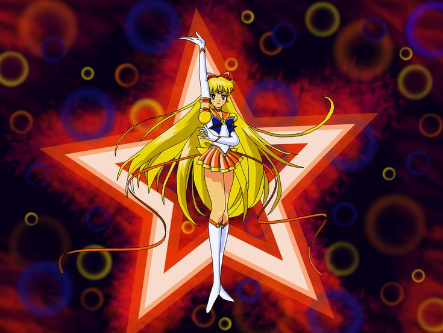
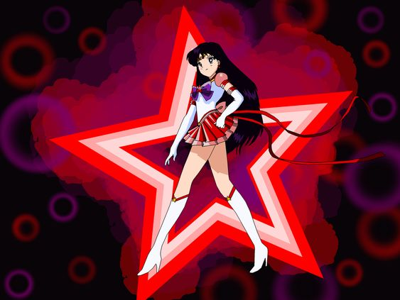
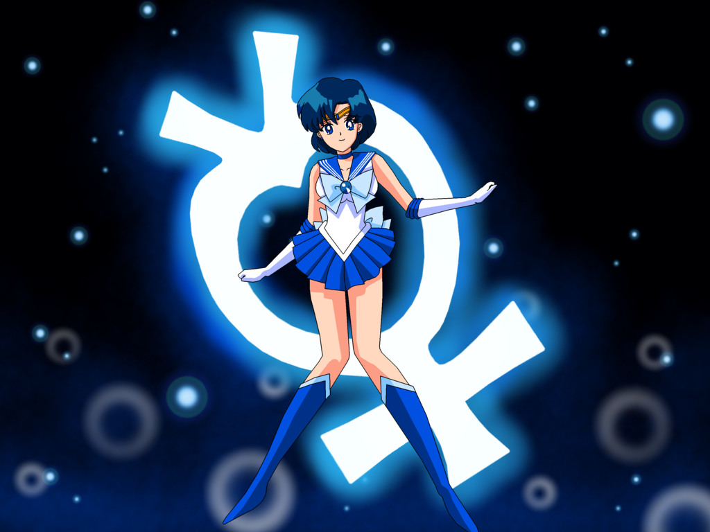
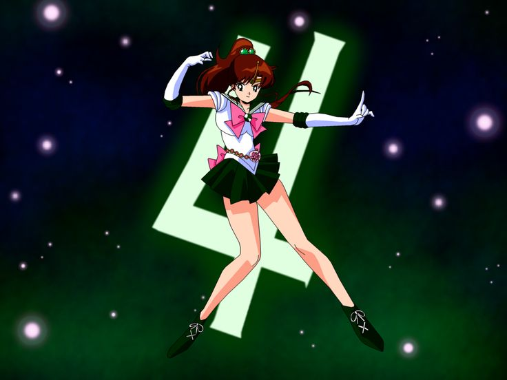

Sailor Moon 🌙

Sailor Moon is an a manga created and illustrated by
Naoko Takeuchi from 1991 to 1997. Her manga was later adapted into an
anime series produced by Toei Animation and broadcasted in Japan from
1992 to 1997
I love this anime because it is the first anime I watched depicting
female super heroes. I imagined having friends like the Sailor Scouts
someday just like Naoko Takeuchi did when she created this anime. I ran
from school daily just to watch new episodes aired at 5pm. This was the
highlight of my day during my elementary school life. I am still a fan
and continue to watch the new movies and rewatch old series from time to
time. Below is a short introduction of each sailor scout.
-
Sailor Moon 🌙
The guardian of love and justice.
-
Sailor Venus 🧡
The guardian of love and beauty.
 -
Sailor Mars 🔥
The guardian of love and passion.
 -
Sailor Mercury 🌊
The guardian of love and intelligence.
 -
Sailor Jupiter ⚡️ The guardian of love and courage.

Together they are the guardians of the solar system. They are not the only sailor scouts but the first to be introduced in the series.